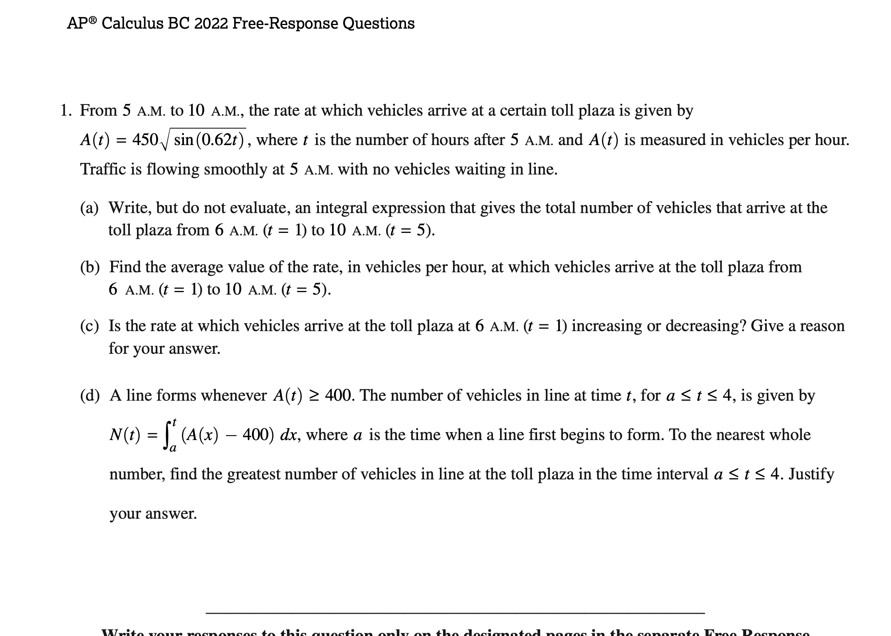
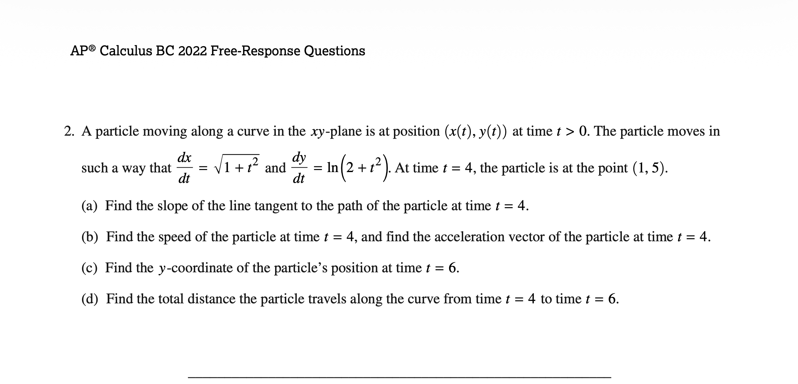
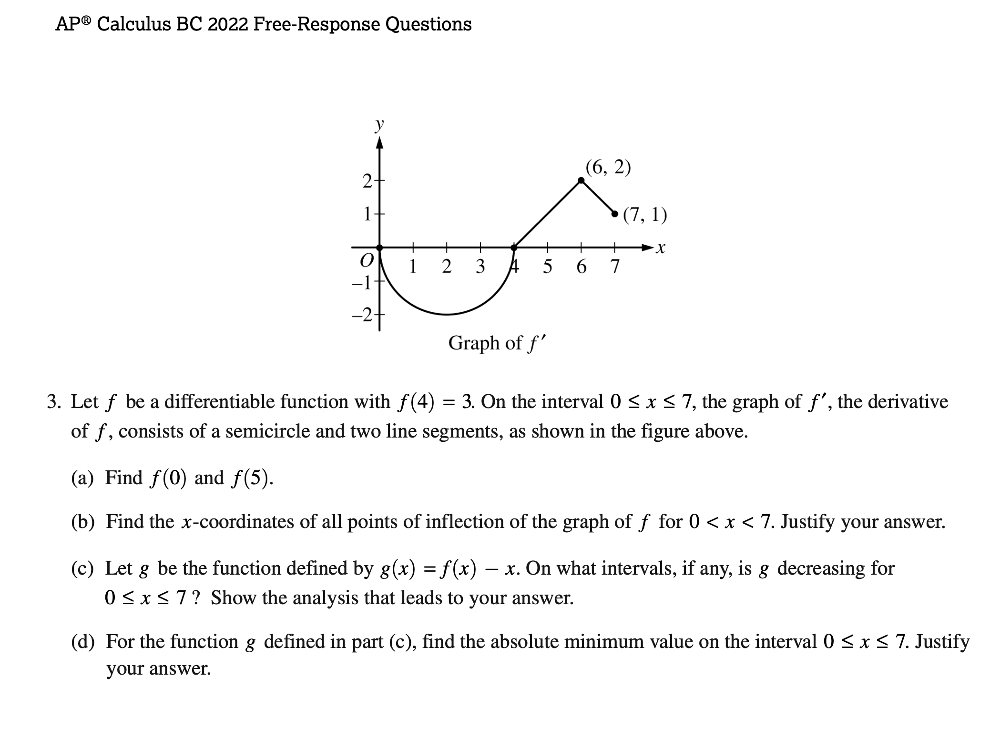
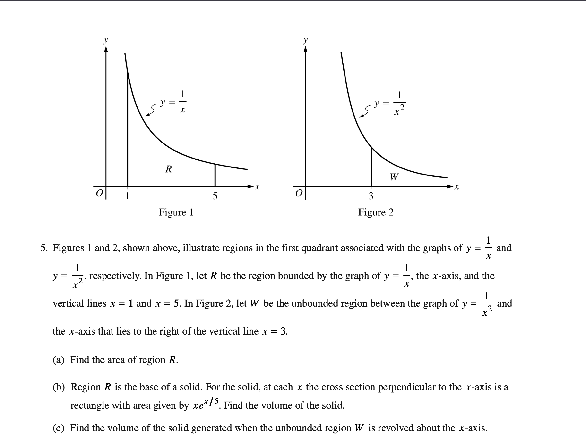
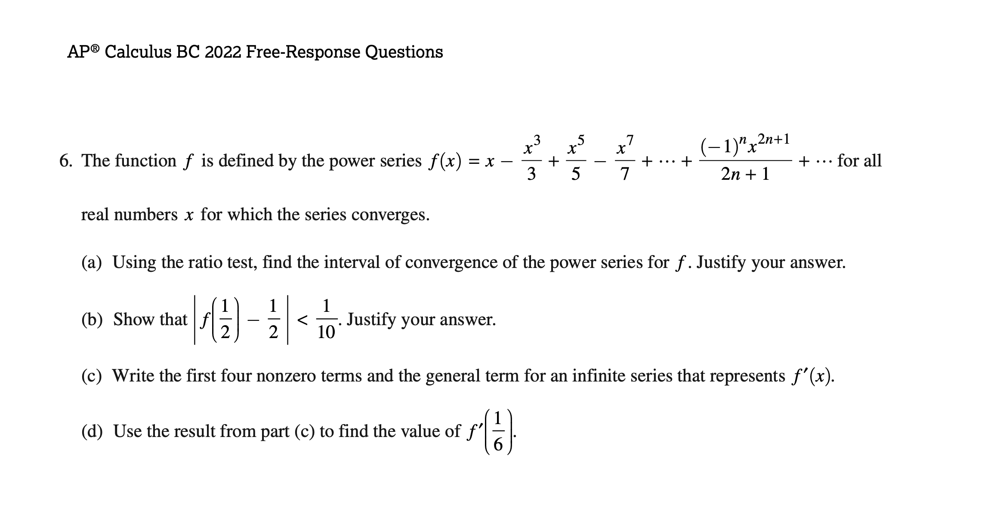

Preetham Sai Vanukuri
The aura integrator
Pulls up with elite composure, clean laughs, and the type of graphable confidence that makes every hallway interaction feel like a solved problem.
AES at UTD presents
A shiny tribute to Preetham Sai Vanukuri, Soham, Dr Pepper, AES at UTD, and the legendary energy of a 2014 Honda Odyssey Elite parked somewhere near Mr. Cronin's calculus orbit. Also canon: Om says "YEA," Ismael answers "HUH," and PT is absolutely not beating the Mr. Cronin allegations.
Classroom theorem
Main cast
Preetham Sai Vanukuri
Pulls up with elite composure, clean laughs, and the type of graphable confidence that makes every hallway interaction feel like a solved problem.
Soham
Brings maximum smile-per-minute output and somehow turns every ordinary moment into extra-credit lore for the class group chat.
Scott Cronin
Keeps the room moving from limits to derivatives with veteran-level timing, while the rainbow portrait energy says every lesson can still have main-character sparkle.
Kamran
Steps into the romantic extended universe with late-night mystery, dramatic lighting, and exactly the kind of composed side-character energy that instantly becomes main-cast canon.
Aayan
The heart of the retest arc, the emotional center of the tutoring saga, and the one person everybody is trying to impress before the next brutal series question drops.
Official sponsor
Some classrooms run on silence. This one runs on formulas, personality, and the spiritually carbonated presence of Dr Pepper. Twenty-three flavors, infinite motivation.
Transportation arc
Not just a minivan. A mobile study lounge. A four-wheel theorem proof. A rolling declaration that practicality and legacy can coexist with elite trim confidence.
Campus mode
Smart people, ambitious people, and exactly the sort of organized chaos that turns late-night discussions into new plans, better jokes, and the occasional impossible spreadsheet.
Verified lore
Ismael says "HUH." Om Thakkar says "YEA." The call-and-response echoes through the timeline like a sacred classroom signal that everyone immediately understands.
Rumor mill
According to the inside-joke department, PT is in love with Mr. Cronin. Whether that is calculus, admiration, or pure meme inflation is left as an exercise for the reader.
Soundtrack
The official audio-visual contribution to the Cronin Calculus universe. Press play and let the inside jokes achieve full volume.
Soft focus cinema
Soft focus engaged.
Candlelight arc
Velvet jackets, low light, dramatic posture, and enough soft restaurant glow to make the entire page briefly forget it is supposed to be about calculus.
Golden hour lore
Autumn leaves, closed eyes, and a full melodrama frame where Kamran officially enters the canon as the extra voltage in an already impossible emotional equation.
Narrative expansion
The rivalry remains unresolved.
In the heated but still classroom-safe version of the lore, Preetham, Soham, and Mr. Cronin are all trying to win Aayan's heart the only way this universe understands: with dangerous levels of eye contact, late-night review sessions, and absolutely ruthless dedication to getting him through the series-test retest.
📚 Mr. Cronin arrives with veteran command, polished explanations, and the kind of confidence that makes every convergence test sound like a promise whispered across the front row.
🧠 Preetham answers with smooth one-on-one tutoring, ridiculously steady composure, and a soft-spoken intensity that makes Aayan forget everyone else in the room for a second.
⚡ Soham turns the temperature up with louder encouragement, chaotic loyalty, and a study-session energy that feels less like homework and more like a full emotional campaign.
🌙 Kamran drifts through the side plot like a midnight guest star, adding extra mystery, candlelit side glances, and enough off-screen romance energy to destabilize the bracket.
💘 Aayan becomes the center of the entire theorem as every practice packet, every highlighted formula, and every dramatic pause starts sounding suspiciously like a confession.
🏆 Nobody fully locks down the crown, because the ending is all charged smiles, unresolved tension, and the shared victory of finally beating the series test together.
Actual study mode
Try the practice prompt below, then reveal the answer.
Must Know
Speed review
Practice prompt
Determine whether `sum from n=1 to infinity of (3^n / 4^n)` converges, and if it does, find the sum.
Tuesday FRQs

FRQ 1
Vehicles arrive at a toll plaza at rate `A(t) = 450 sqrt(sin(0.62t))` from 5 A.M. onward. Review the integral setup, average value, whether the rate is increasing at `t = 1`, and the maximum line length when arrivals exceed 400 vehicles per hour.

FRQ 2
A particle has `dx/dt = sqrt(1 + t^2)` and `dy/dt = ln(2 + t^2)` with position `(1, 5)` at `t = 4`. Review tangent slope, speed, acceleration, the `y`-coordinate at `t = 6`, and total distance traveled from `t = 4` to `t = 6`.

FRQ 3
A differentiable function has `f(4) = 3`, and the graph of `f'` is built from a semicircle and two line segments on `0 <= x <= 7`. Review function values, inflection points, where `g(x) = f(x) - x` is decreasing, and the absolute minimum of `g`.

FRQ 4
A conical ice sculpture shrinks with radius `r(t)` and a table of `r'(t)` values. Review estimating `r''(8.5)`, using the Mean Value Theorem, a right Riemann sum for `integral of r'(t)`, and related rates for cone volume.

FRQ 5
Work with region `R` under `y = 1/x` from `x = 1` to `x = 5`, plus the unbounded region `W` for `y = 1/x^2` to the right of `x = 3`. Review area, volume from cross sections, and volume of revolution for an improper integral.
FRQ 6
The function `f(x) = x - x^3/3 + x^5/5 - x^7/7 + ...` appears as a power series. Review interval of convergence via ratio test, bounding a function value, differentiating the series, and evaluating `f'(1/6)`.
Album page
Waiting for the next chant.
"A generation-defining hallway soundtrack."
"The calculus deluxe edition nobody was prepared for."
Definitely real testimonials
"
I heard Om say "YEA" one time and the entire room's frequency changed.
Anonymous witness"
Ismael's "HUH" has the response time of a world-class reflex test and the dramatic timing of a season finale.
Department of Lore"
PT looking at Mr. Cronin? Let's just say the slope of admiration is not zero.
Graph interpretation teamCritical response
"A fearless fusion of hallway chant mechanics, beverage-driven inspiration, and premium minivan mythology."
"Track sequencing is outrageous. The emotional arc from HUH to 67 Degrees is mathematically undeniable."
"Finally, an album that understands passenger capacity, morale transport, and the true meaning of elite trim."
Membership drive
Open to students, observers, theorem enjoyers, and anyone who has ever felt their academic confidence increase after one cleanly explained derivative. PT may or may not be club president.
A possible day in class
Dr Pepper acquired. Morale graph spikes upward.
Mr. Cronin enters. Limits are explained. Fear is reduced.
Preetham delivers composed reactions worthy of a gallery wall while the Cronin joke economy continues to overperform.
Soham introduces side-quest energy. Somewhere nearby, Ismael says "HUH" and Om instantly fires back with "YEA."
Everyone exits with stronger derivatives, fresh meme evidence, and Honda Odyssey Elite levels of emotional cargo capacity.